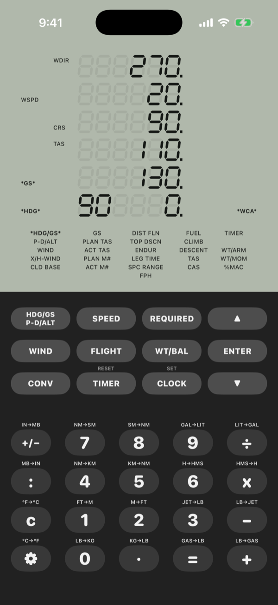
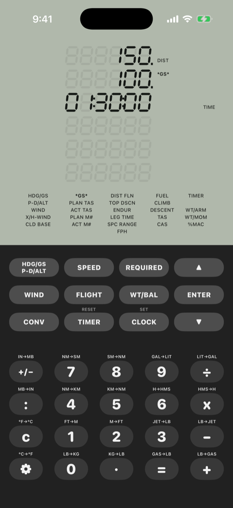
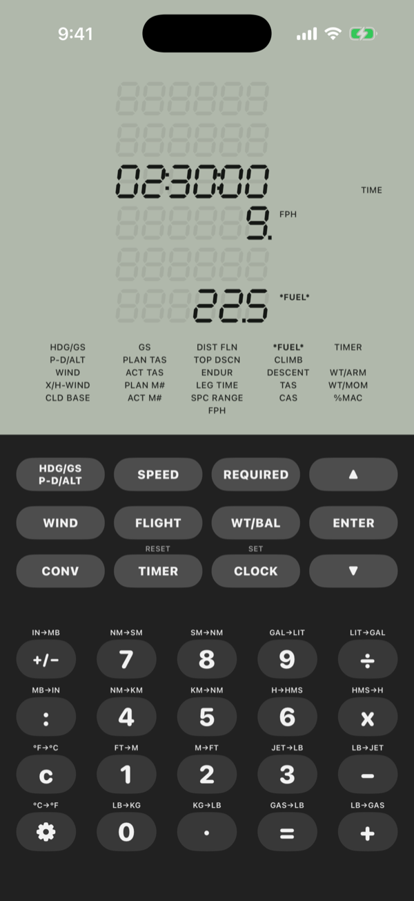
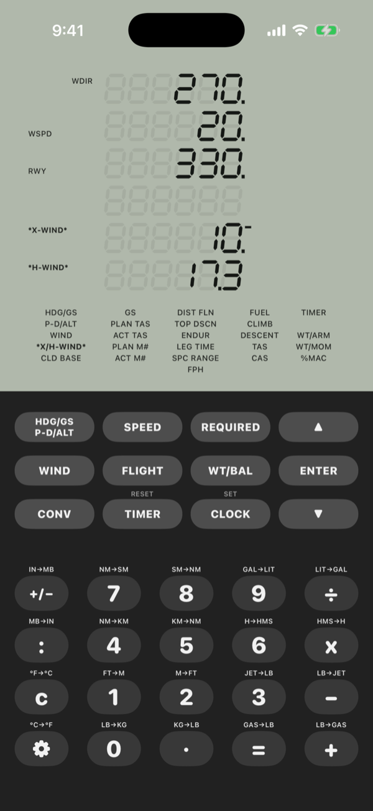
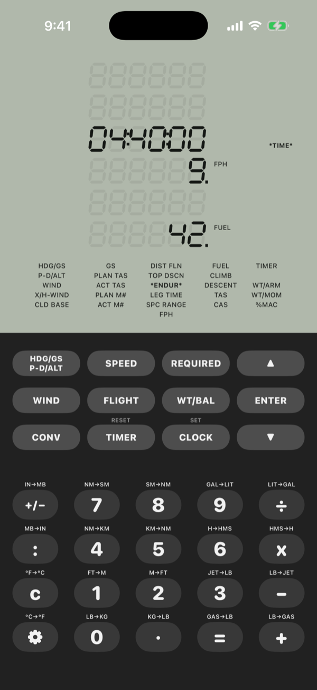
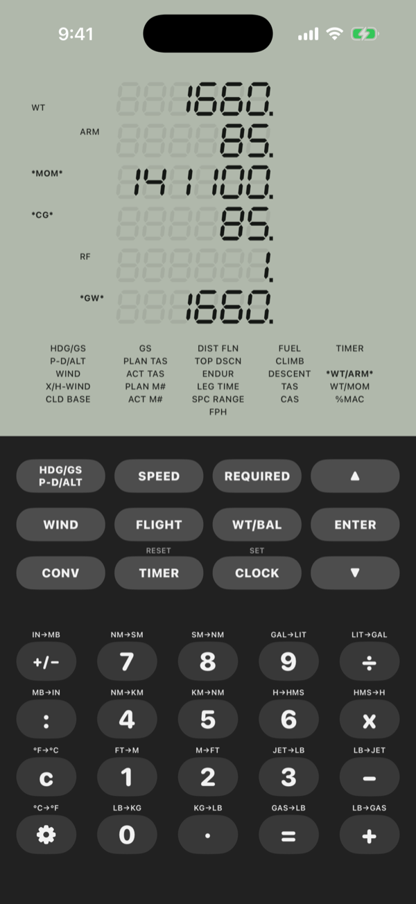
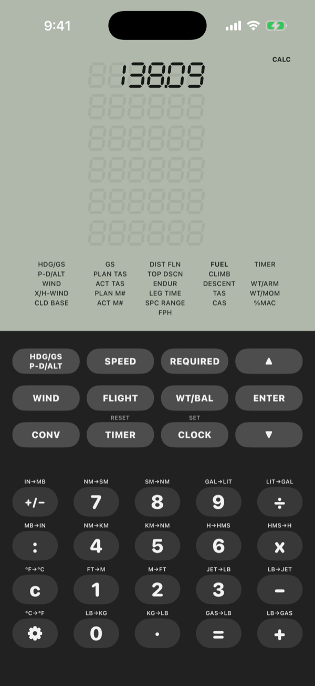
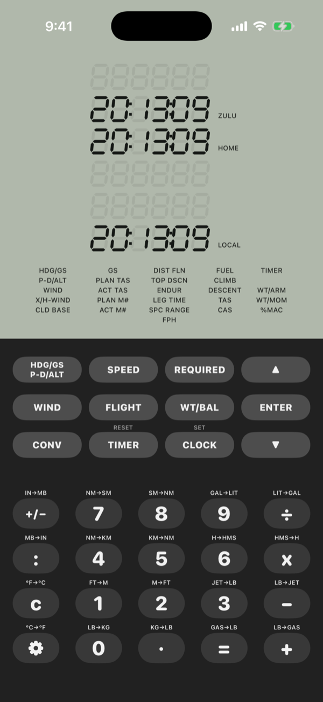

Heading and groundspeed
Give it the wind, your course and your true airspeed, and it returns groundspeed, heading and wind correction angle. The same key also works out pressure altitude and density altitude.
This app is carefully designed to replicate the functionality and interface of the Sporty's E6B, so your practice on your phone helps you practice for the Written.

This app is designed to carefully replicate the features of the Sporty's E6B, like...
Give it the wind, your course and your true airspeed, and it returns groundspeed, heading and wind correction angle. The same key also works out pressure altitude and density altitude.

Groundspeed from distance and time. True airspeed from calibrated airspeed, altitude and temperature, with Mach number. Also converts Mach to true airspeed.

Fuel for a given time, climb rate and gradient, and the descent rate to reach a fix at a set altitude. Also the airspeed and heading you need to make a target groundspeed.

Crosswind and headwind for any runway. Or enter your track, heading and speeds to find out what wind you actually have. Cloud base from temperature and dew point.

Distance flown, leg time, endurance, range, fuel burn per hour, and how far out to start your descent. Values you just worked out, like groundspeed, carry over to the next function.

Enter each load by weight and arm, or weight and moment. It keeps a running total of gross weight, moment and CG. It can also give CG as a percent of MAC.

A regular calculator. Every number key has a conversion printed above it: nautical to statute miles and km, feet to meters, gallons to liters, pounds to kilograms, fuel volume to weight, °F to °C, inHg to millibars, and hours to H:M:S.

Shows Zulu, home and local time at once. The timer counts up or down.